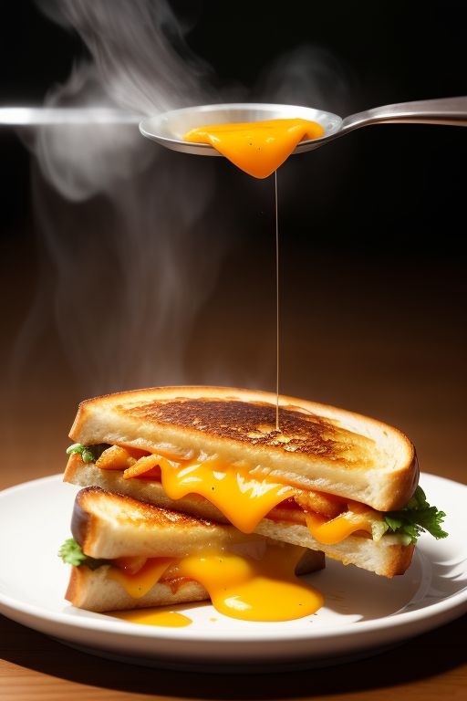

Description
This classic grilled cheese recipe delivers a crispy,
golden-brown exterior with melted,
gooey cheese inside. Perfectly toasted in butter,
this sandwich is simple, comforting, and
irresistibly delicious. Ideal for a quick meal or a cozy snack!
Ingredients
- 2 slices of bread
- 2 slices of cheese
- 1 tablespoon butter
Steps
- Butter one side of each bread slice.
- Place one slice, buttered side down, in a heated pan.
- Add the cheese on top, then cover with the second slice, buttered side up.
- Cook on medium heat until the bottom is golden brown, about 2-3 minutes.
- Flip the sandwich and cook the other side until the cheese is melted and the bread is golden brown, about 2-3 minutes more.
- Remove from the pan, slice, and serve hot.